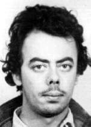

José
Roberto
Arantes
de Almeida
BIOGRAFIA
Estudante de Engenharia no Instituto Tecnológico da Aeronáutica (ITA), foi expulso em 1964, em virtude de suas atividades políticas, e levado preso para a Base Aérea do Guarujá. Libertado, retomou os estudos na Faculdade de Filosofia, Letras e Ciências Humanas da Universidade de São Paulo (USP), onde iniciou o curso de Filosofia. Em 1966, foi eleito presidente do Grêmio da Filosofia.
Arantes iniciou sua militância partidária no Partido Comunista Brasileiro (PCB), tornando-se, já em 1967, uma das principais lideranças da Dissidência Comunista de São Paulo (Disp). Boa parte dos integrantes dessa dissidência, a partir de 1969, se uniria ao grupo de luta armada Ação Libertadora Nacional (ALN). Em 1967, tornou-se vice-presidente da União Nacional dos Estudantes (UNE). No ano seguinte, foi preso durante a repressão ao 30º Congresso da entidade, em Ibiúna (SP).
Zé Arantes, como era conhecido, conseguiu fugir de dentro do Dops. Esteve em Cuba, onde realizou treinamento de guerrilha como militante da ALN. Lá, junto com outros companheiros, resolveu criar o Movimento de Libertação Popular (Molipo).
Em novembro de 1971, foi preso em São Paulo por agentes do DOI-Codi, junto com Aylton Adalberto Mortati. Os dois foram os primeiros militantes mortos de um grupo de 28 exilados que participaram de treinamento de guerrilha em Cuba e retornaram clandestinamente ao Brasil como integrantes do Molipo. A morte de Arantes foi divulgada apenas cinco dias depois. A família só foi informada quando ele já estava enterrado como indigente no Cemitério Dom Bosco, em Perus, com o nome falso de José Carlos Pires de Andrade.
Graças à intervenção de um delegado do Dops, Emiliano Cardoso de Mello, parente da família de Arantes, o órgão autorizou o traslado do corpo para o Cemitério Municipal de Araraquara, alguns dias depois. A falsidade da versão oficial só foi comprovada com o exame dos documentos encontrados no Instituto Médico Legal (IML) de São Paulo, bem como da análise da foto do cadáver, localizada nos arquivos secretos do Dops. Na requisição da necropsia, encontra-se: “por volta das 17 horas, manteve tiroteio com membros dos órgãos de segurança, sendo nessa oportunidade ferido, e em consequência veio a falecer”. O corpo, entretanto, só chegou ao IML 24 horas depois do suposto tiroteio no qual fora morto. O laudo registra ainda que a autópsia foi realizada antes de chegar ao IML.
O relator do processo na Comissão Especial de Mortos e Desaparecidos Políticos ponderou que “Arantes já fora preso na Base Aérea de Santos e em Ibiúna, em 1968. Os órgãos repressivos sabiam de suas ligações com a ALN e o Molipo e, no entanto, foi enterrado com nome falso, como indigente. A ocultação do cadáver visava, sem sombra de dúvidas, encobrir as torturas visíveis na foto e a execução com ferimentos não descritos no laudo”.
An Engineering student at the Aeronautical Technological Institute (ITA), he was expelled in 1964, due to his political activities, and taken to the Guarujá Air Base. Released, he resumed his studies at the Faculty of Philosophy, Letters and Human Sciences at the University of São Paulo (USP), where he began studying Philosophy. In 1966, he was elected president of the Philosophy Guild.
Arantes began his party activism in the Brazilian Communist Party (PCB), becoming, in 1967, one of the main leaders of the Communist Dissent of São Paulo (Disp). Many of the members of this dissidence, from 1969 onwards, would join the armed struggle group Ação Libertadora Nacional (ALN). In 1967, he became vice-president of the National Union of Students (UNE). The following year, he was arrested during the repression of the entity's 30th Congress, in Ibiúna (SP).
Zé Arantes, as he was known, managed to escape from Dops. He was in Cuba, where he underwent guerrilla training as an ALN militant. There, together with other companions, he decided to create the Popular Liberation Movement (Molipo).
In November 1971, he was arrested in São Paulo by DOI-Codi agents, along with Aylton Adalberto Mortati. The two were the first militants killed in a group of 28 exiles who participated in guerrilla training in Cuba and returned clandestinely to Brazil as members of Molipo. Arantes' death was announced just five days later. The family was only informed when he was already buried as a pauper in the Dom Bosco Cemetery, in Perus, under the false name of José Carlos Pires de Andrade.
Thanks to the intervention of a Dops delegate, Emiliano Cardoso de Mello, a relative of the Arantes family, the body authorized the transfer of the body to the Araraquara Municipal Cemetery, a few days later. The falsity of the official version was only proven after examining the documents found at the Legal Medical Institute (IML) in São Paulo, as well as analyzing the photo of the corpse, located in the secret Dops files. In the autopsy request, it is stated: “at around 5 pm, he had a shootout with members of the security agencies, being injured on that occasion, and as a result he died”. The body, however, only arrived at the IML 24 hours after the alleged shooting in which he was killed. The report also records that the autopsy was carried out before arriving at the IML.
The rapporteur of the case at the Special Commission on Political Deaths and Disappearances considered that "Arantes had already been arrested at the Santos Air Base and in Ibiúna, in 1968. The repressive bodies knew of his links with the ALN and Molipo and, however, he was buried under a false name, as a pauper. The concealment of the corpse was intended, without a shadow of a doubt, to cover up the torture visible in the photo and the execution with injuries not described in the report."
Estudiante de Ingeniería en el Instituto Tecnológico Aeronáutico (ITA), fue expulsado en 1964, por sus actividades políticas, y trasladado a la Base Aérea de Guarujá. Liberado, retomó sus estudios en la Facultad de Filosofía, Letras y Ciencias Humanas de la Universidad de São Paulo (USP), donde inició la carrera de Filosofía. En 1966 fue elegido presidente del Gremio de Filosofía.
Arantes inició su activismo partidario en el Partido Comunista Brasileño (PCB), convirtiéndose, en 1967, en uno de los principales dirigentes de la Disidencia Comunista de São Paulo (Disp). Muchos de los miembros de esta disidencia, a partir de 1969, se incorporarían al grupo de lucha armada Ação Libertadora Nacional (ALN). En 1967 asumió la vicepresidencia de la Unión Nacional de Estudiantes (UNE). Al año siguiente, fue detenido durante la represión del 30º Congreso de la entidad, en Ibiúna (SP).
Zé Arantes, como era conocido, logró escapar de Dops. Estuvo en Cuba, donde recibió entrenamiento guerrillero como militante del ALN. Allí, junto a otros compañeros, decidió crear el Movimiento de Liberación Popular (Molipo).
En noviembre de 1971 fue detenido en São Paulo por agentes del DOI-Codi, junto con Aylton Adalberto Mortati. Los dos fueron los primeros militantes asesinados en un grupo de 28 exiliados que participaron en entrenamiento guerrillero en Cuba y regresaron clandestinamente a Brasil como miembros de Molipo. La muerte de Arantes se anunció apenas cinco días después. La familia sólo fue informada cuando ya estaba enterrado como indigente en el Cementerio Dom Bosco, en Perus, bajo el nombre falso de José Carlos Pires de Andrade.
Gracias a la intervención de un delegado del Dops, Emiliano Cardoso de Mello, familiar de la familia Arantes, el organismo autorizó el traslado del cuerpo al Cementerio Municipal de Araraquara, pocos días después. La falsedad de la versión oficial sólo fue comprobada después de examinar los documentos encontrados en el Instituto Médico Legal (IML) de São Paulo, además de analizar la foto del cadáver, ubicada en los archivos secretos del Dops. En la solicitud de autopsia se señala: “alrededor de las cinco de la tarde tuvo un tiroteo con miembros de los organismos de seguridad, resultando herido en esa ocasión, producto de lo cual falleció”. El cuerpo, sin embargo, llegó al IML recién 24 horas después del presunto tiroteo en el que fue asesinado. El informe también registra que la autopsia se realizó antes de llegar al IML.
El relator del caso en la Comisión Especial de Muertes y Desapariciones Políticas consideró que "Arantes ya había sido detenido en la Base Aérea de Santos y en Ibiúna, en 1968. Los cuerpos represivos conocían sus vínculos con la ALN y el Molipo y, sin embargo, fue enterrado con un nombre falso, como indigente. La ocultación del cadáver pretendía, sin lugar a dudas, encubrir las torturas visibles en la foto y la ejecución con lesiones no descritas en el informe."
CIRCUNSTÂNCIAS DA MORTE
José Roberto Arantes de Almeida morreu, no dia 4 de novembro de 1971, após ser preso junto com Aylton Adalberto Mortati, por agentes do DOI-CODI de São Paulo. Os dois militantes faziam parte de um grupo de exilados políticos que havia recebido treinamento de guerrilha em Cuba e retornaram ao Brasil clandestinamente. Dos 28 militantes que retornaram, José Roberto e Aylton Adalberto foram os primeiros a serem mortos pelas forças de repressão. Após o retorno ao Brasil em 1971, José Roberto Arantes – assim como outros militantes com curso de guerrilha em Cuba – passou a ser vigiado pelo aparato repressivo do Estado. No dia 4 de novembro de 1971, Arantes foi preso em sua casa, na rua Cervantes no 7, no bairro da Vila Prudente, em São Paulo, onde residia com membros da Molipo: Aylton Adalberto Mortati e Maria Augusta Thomaz. De acordo com a falsa versão divulgada pelo Estado, José Roberto Arantes de Almeida teria sido gravemente ferido em tiroteio, em ação que culminou com o estouro de um “aparelho”, com a utilização de bombas de gás lacrimogêneo e granadas. José Roberto teria morrido após confronto com agentes de segurança. Ressalta-se que o documento, oriundo da Escola Nacional de Informação (ESNI), apesar de relatar que havia quatro integrantes no local, não faz nenhuma referência a Aylton Mortati, preso na mesma ação. As investigações sobre esse episódio, realizadas ainda pela Comissão de Familiares de Mortos e Desaparecidos Políticos, revelaram a existência de elementos que desqualificam a falsa versão divulgada. A requisição de exame apresentada ao Instituto Médico-Legal de São Paulo (IML/SP) pelo DOPS/SP traz a letra “T”, utilizada à época para referir-se a categoria de indivíduos considerados “terroristas”. Em resposta à solicitação, em 9 de novembro, o laudo de exame do IML/SP, assinado por Luiz Alves Ferreira e Vasco Elias Rossi, reconhecem a morte de José Carlos Pires de Andrade, codinome que era utilizado por Arantes, atesta: “[…] segundo consta, trata-se de elemento terrorista, que faleceu em tiroteio travado ao resistir à prisão, com militares da OBAN [DOI-CODI/SP], vindo a falecer às 17h30, aproximadamente, no dia 4 de novembro de 1971, sendo encontrado no pátio do trigésimo sexto distrito policial.” Como o documento refere-se ao local da morte sendo o 36a DP, localizada na rua Tutóia, sede do DOI-CODI/II Exército na época, depreende-se que José Arantes teria sido levado com vida ao local, aonde veio a falecer. O corpo desse militante foi levado ao IML, no dia em 5 de novembro, às 18 horas. O laudo também afirma que o corpo tinha dois ferimentos perfuro-contuso de formato ovular, medindo três centímetros na maior dimensão, localizados na parte média da região frontal, o que não se confirma na foto do corpo de Arantes, posto que não aparenta esses dois ferimentos à bala na cabeça, mas grandes equimoses na região malar esquerda. Além disso, o laudo mencionado não faz referências a ferimentos nessa região. Os jornais Folha de S. Paulo e O Estado de São Paulo reproduziram a versão oficial divulgando a morte de Arantes somente no dia 9 de novembro de 1971. A família foi comunicada de sua morte após o corpo ter sido enterrado como indigente no Cemitério Dom Bosco, sob a falsa identificação de José Carlos Pires de Andrade, assim como constava no laudo de exame do IML/SP. Os familiares de José Roberto somente conseguiram o translado do corpo para o Cemitério Municipal de Araraquara, em 16 de novembro de 1971, por meio de contatos políticos dentro do DOPS/SP. Os restos mortais de José Roberto Arantes de Almeida foram enterrados no cemitério Municipal de Araraquara.
José Roberto Arantes de Almeida died on November 4, 1971, after being arrested together with Aylton Adalberto Mortati, by DOI-CODI agents in São Paulo. The two militants were part of a group of political exiles who had received guerrilla training in Cuba and returned to Brazil clandestinely. Of the 28 militants who returned, José Roberto and Aylton Adalberto were the first to be killed by the repression forces. After returning to Brazil in 1971, José Roberto Arantes – like other militants who had studied guerrilla warfare in Cuba – began to be monitored by the State's repressive apparatus. On November 4, 1971, Arantes was arrested at his home, on Rua Cervantes no. 7, in the Vila Prudente neighborhood, in São Paulo, where he lived with members of Molipo: Aylton Adalberto Mortati and Maria Augusta Thomaz. According to the false version released by the State, José Roberto Arantes de Almeida was seriously injured in a shootout, in an action that culminated in the explosion of a “device”, with the use of tear gas bombs and grenades. José Roberto reportedly died after a confrontation with security agents. It is noteworthy that the document, originating from the National Information School (ESNI), despite reporting that there were four members at the scene, makes no reference to Aylton Mortati, arrested in the same action. Investigations into this episode, carried out by the Commission of Relatives of the Political Dead and Disappeared, revealed the existence of elements that disqualify the false version published. The examination request presented to the São Paulo Medical-Legal Institute (IML/SP) by DOPS/SP bears the letter “T”, used at the time to refer to the category of individuals considered “terrorists”. In response to the request, on November 9, the IML/SP examination report, signed by Luiz Alves Ferreira and Vasco Elias Rossi, recognizes the death of José Carlos Pires de Andrade, a codename used by Arantes, attests: “[…] according to reports, he is a terrorist element, who died in a shootout while resisting arrest, with military personnel from OBAN [DOI-CODI/SP], dying at 5:30 p.m., approximately, on November 4, 1971, being found in the courtyard of the thirty-sixth police district.” As the document refers to the place of death as the 36th DP, located on Rua Tutóia, headquarters of DOI-CODI/II Army at the time, it appears that José Arantes would have been taken alive to the place, where he died. The body of this militant was taken to the IML, on November 5th, at 6 pm. The report also states that the body had two ovular-shaped puncture wounds, measuring three centimeters in the largest dimension, located in the middle part of the frontal region, which is not confirmed in the photo of Arantes' body, as it does not appear these two gunshot wounds to the head, but large bruises on the left malar region. Furthermore, the report mentioned does not mention injuries in this region. The newspapers Folha de S. Paulo and O Estado de São Paulo reproduced the official version announcing Arantes' death only on November 9, 1971. The family was informed of his death after the body was buried as a pauper in the Dom Bosco Cemetery, under the false identification of José Carlos Pires de Andrade, as stated in the IML/SP examination report. José Roberto's family only managed to have the body transferred to the Araraquara Municipal Cemetery, on November 16, 1971, through political contacts within the DOPS/SP. The remains of José Roberto Arantes de Almeida were buried in the Araraquara Municipal Cemetery.
José Roberto Arantes de Almeida murió el 4 de noviembre de 1971, tras ser detenido junto con Aylton Adalberto Mortati, por agentes del DOI-CODI en São Paulo. Los dos militantes formaban parte de un grupo de exiliados políticos que habían recibido entrenamiento guerrillero en Cuba y regresaron clandestinamente a Brasil. De los 28 militantes que regresaron, José Roberto y Aylton Adalberto fueron los primeros asesinados por las fuerzas de represión. Después de regresar a Brasil en 1971, José Roberto Arantes –al igual que otros militantes que habían estudiado la guerra de guerrillas en Cuba– comenzó a ser monitoreado por el aparato represivo del Estado. El 4 de noviembre de 1971 Arantes fue detenido en su domicilio, en la Rua Cervantes núm. 7, en el barrio de Vila Prudente, en São Paulo, donde vivía con miembros de Molipo: Aylton Adalberto Mortati y Maria Augusta Thomaz. Según la versión falsa difundida por el Estado, José Roberto Arantes de Almeida resultó gravemente herido en un tiroteo, en acción que culminó con la explosión de un “artefacto”, con el uso de bombas lacrimógenas y granadas. Según los informes, José Roberto murió tras un enfrentamiento con agentes de seguridad. Llama la atención que el documento, proveniente de la Escuela Nacional de Información (ESNI), a pesar de informar que había cuatro integrantes en el lugar, no hace referencia a Aylton Mortati, detenido en la misma acción. Las investigaciones sobre este episodio, realizadas por la Comisión de Familiares de Muertos y Desaparecidos Políticos, revelaron la existencia de elementos que descalifican la versión falsa publicada. La solicitud de examen presentada al Instituto Médico Legal de São Paulo (IML/SP) por el DOPS/SP lleva la letra “T”, utilizada en la época para referirse a la categoría de personas consideradas “terroristas”. En respuesta a la solicitud, el 9 de noviembre, el informe de examen del IML/SP, firmado por Luiz Alves Ferreira y Vasco Elias Rossi, reconoce la muerte de José Carlos Pires de Andrade, nombre clave utilizado por Arantes, constata: “[…] según los informes, se trata de un elemento terrorista, que murió en un tiroteo al resistirse a la detención, con militares del OBAN [DOI-CODI/SP], falleciendo a las 17.30 horas, aproximadamente, del día 9. 4 de noviembre de 1971, siendo encontrado en el patio del distrito policial trigésimo sexto”. Como el documento refiere el lugar de la muerte como la 36.ª DP, situada en la Rua Tutóia, entonces cuartel general del DOI-CODI/II Ejército, parece que José Arantes habría sido llevado vivo al lugar donde murió. El cuerpo de este militante fue trasladado al IML, el 5 de noviembre, a las 6 de la tarde. El informe también señala que el cuerpo presentaba dos heridas punzantes de forma ovular, de tres centímetros en su dimensión mayor, ubicadas en la parte media de la región frontal, lo cual no se confirma en la fotografía del cuerpo de Arantes, ya que no aparecen estos dos impactos de bala en la cabeza, sino grandes hematomas en la región malar izquierda. Además, el informe mencionado no menciona heridos en esta región. Los diarios Folha de S. Paulo y O Estado de São Paulo reprodujeron la versión oficial anunciando la muerte de Arantes recién el 9 de noviembre de 1971. La familia fue informada de su muerte luego de que el cuerpo fuera enterrado como indigente en el Cementerio Dom Bosco, bajo la identificación falsa de José Carlos Pires de Andrade, como consta en el informe de examen del IML/SP. La familia de José Roberto sólo logró que el cuerpo fuera trasladado al Cementerio Municipal de Araraquara, el 16 de noviembre de 1971, a través de contactos políticos en el seno del DOPS/SP. Los restos de José Roberto Arantes de Almeida fueron enterrados en el Cementerio Municipal de Araraquara.